[SH3, SH4] Henry's Bookshelf and SH3's Bookstore
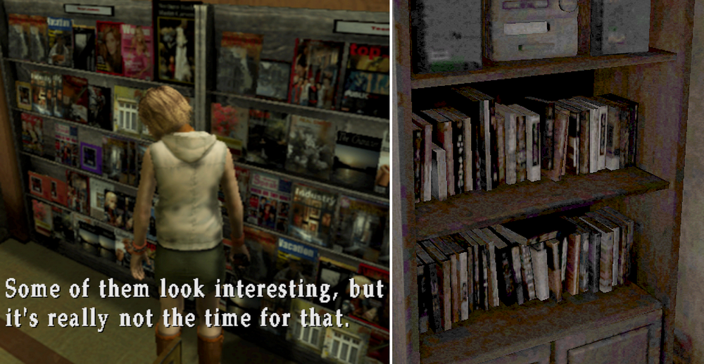
Comparing Textures of SH3's Bookstore and Henry's Bookshelf
![[SH3, SH4] Henry's Bookshelf and SH3's Bookstore](img/da41.png)
This is a mirror of the DeviantArt version linked above, provided as a backup and for easier access.


As I mentioned when comparing subway signs, some of the signs in SH3, which are PS2-quality but still quite clear. But even though SH4 is the PC version with high-resolution, these same signs are blurry and even deliberately distorted.
The same goes for book textures.
The bookstore scene in SH3, at PS2 quality, looks like this. Many fans had already discovered the original sources of the books on display.
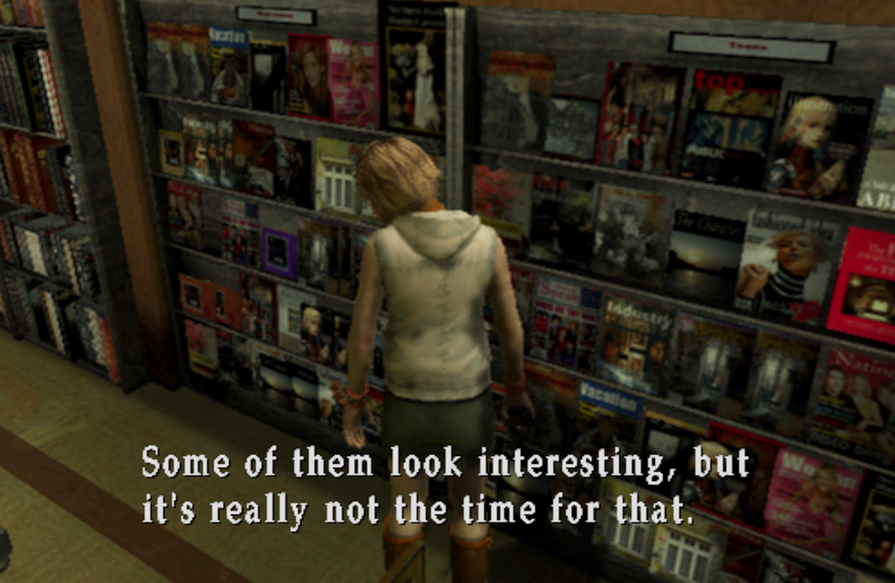
And this is Henry's bookshelf in SH4. Even when taking screenshots early in the game while the room is still clean, it looks like this.
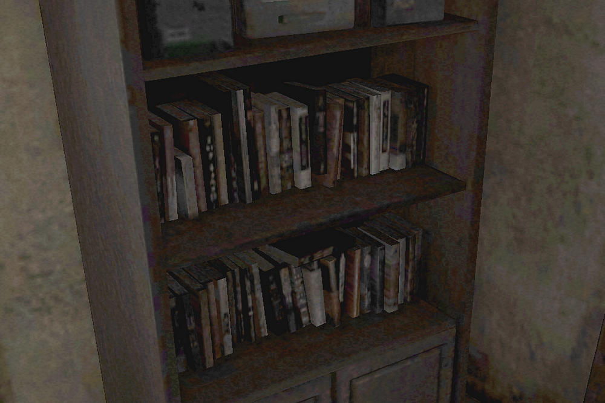
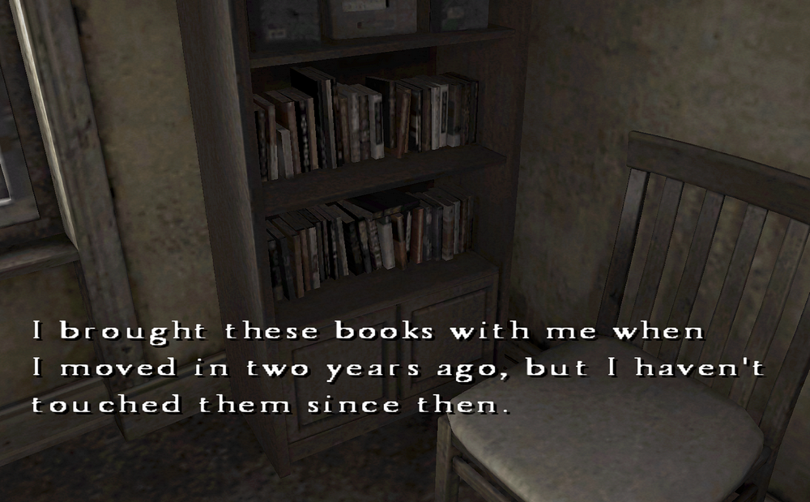
Even if I cheat and look at the texture files directly, there's barely any difference.
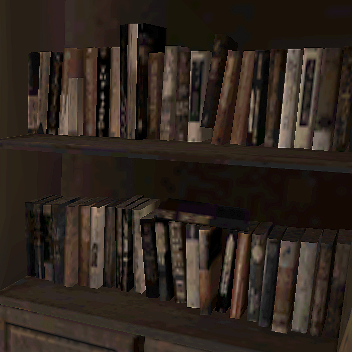
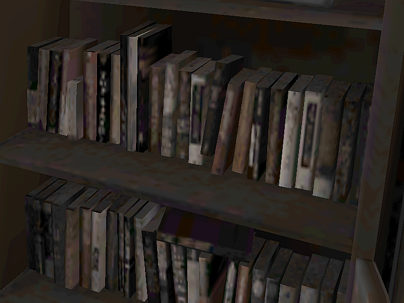
You can really feel the devs' strong intention of "we absolutely don't want these to be deciphered," haha. Just kidding.
I think in reality, SH4 blurs things to fit its dreamlike, ambiguous world between dream and reality. As a fan, it's a bit unfortunate though.
So I tried my best to check it with my mind's eye... There are things that look like titles with "THE" or kanji-like titles. The arrowed parts look like a person's upper body, so maybe a manga. I couldn't read the full titles, but I think, like SH3, those are originals that's been altered and blurred.
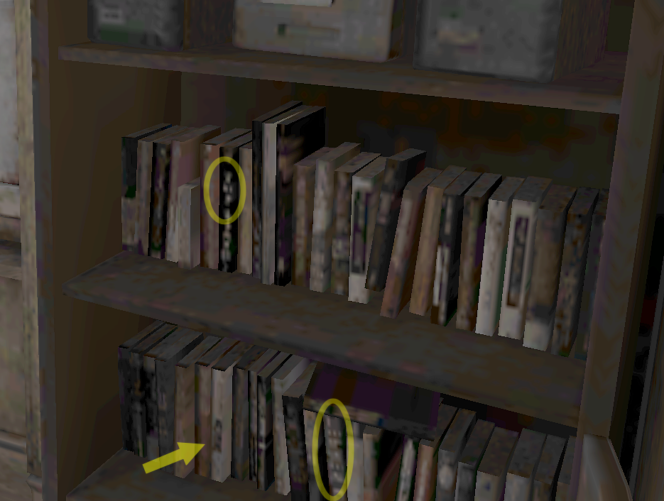
I'm still waiting for a remaster with a high-res bookshelf where the titles are actually legible, and where you can open all the drawers in the room. Haha.
By the way, Joseph's room has the same bookshelf, but the books are arranged differently—a nice little detail.
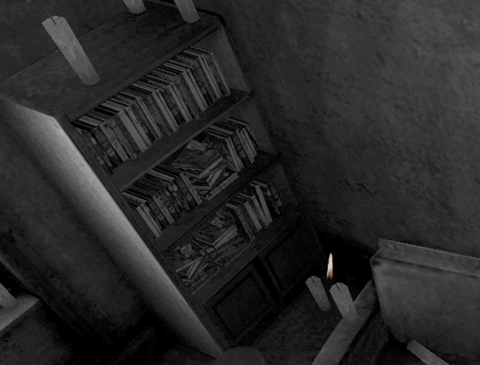
Even if you check Eileen's room magazines, you can't read them.
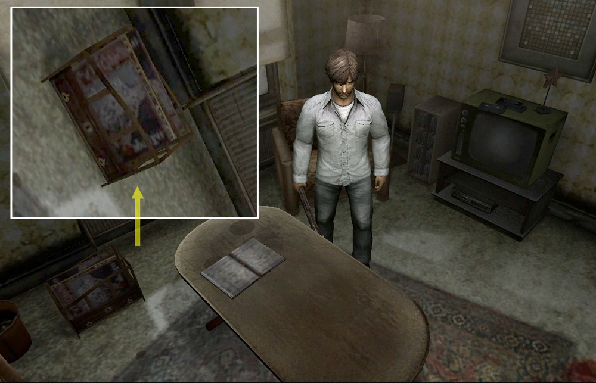
Frank the superintendent's bookshelf. Is there some rule in this apartment that no one lines their books up properly?
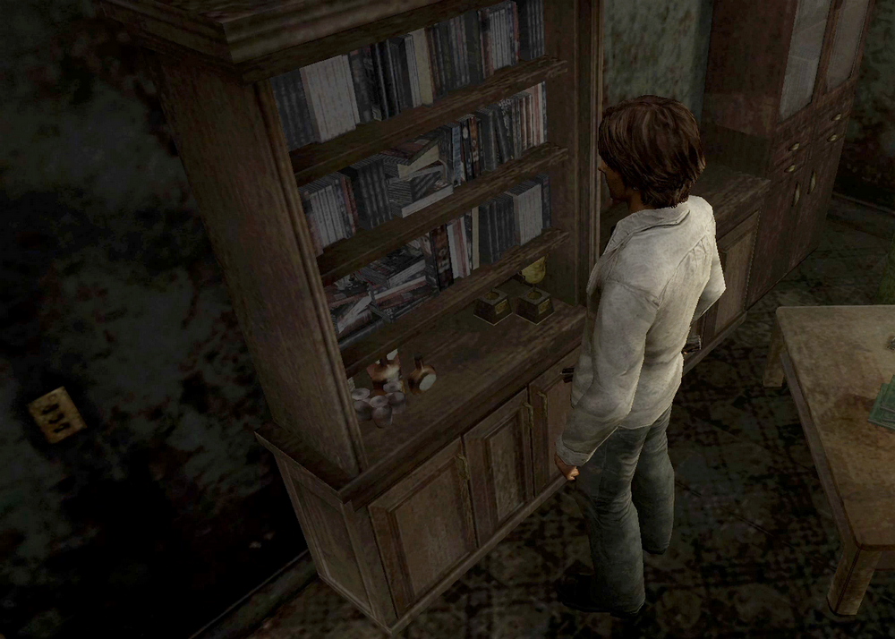
Not everything is unreadable though. The magazine on Henry's coffee table is a car book titled "BIKKURICAR." "Bikkuri" is a Japanese word that means surprise or astonishment.
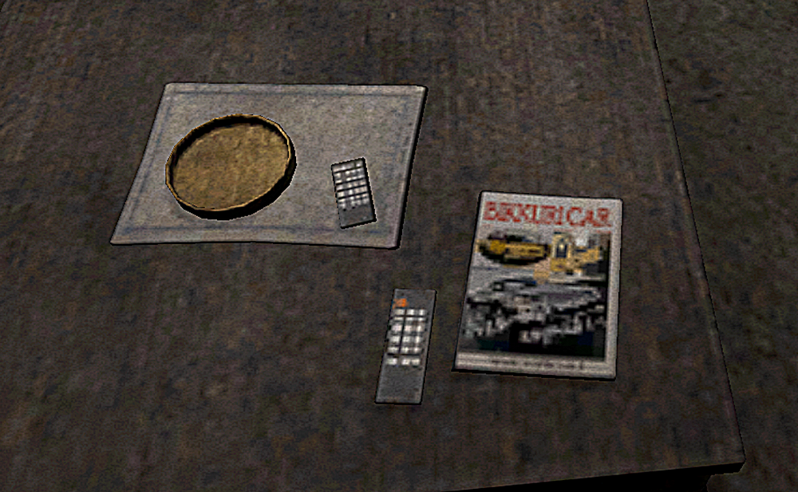
And this is something I previously introduced as a texture, but it's actually a part you can't see in-game. It's so unfair that it looks so clear when you can't even see it, lol.

Like I said before, the book on the table is the same one from SH3. I want to see the books on Henry's bookshelf in this level of clarity. ← Stalker.
So, most of it was pretty much unrecognizable, but what genres are most common for cheap American novels anyway? Mystery, action? Maybe romance…?!
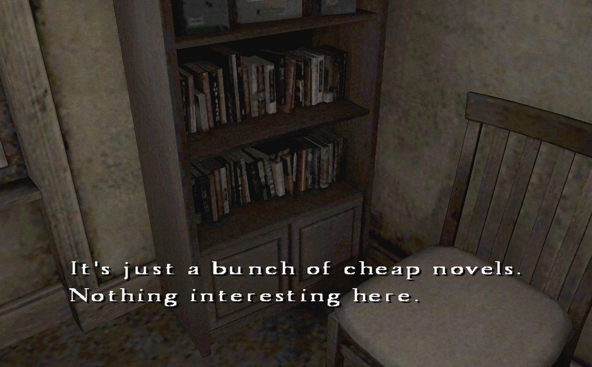